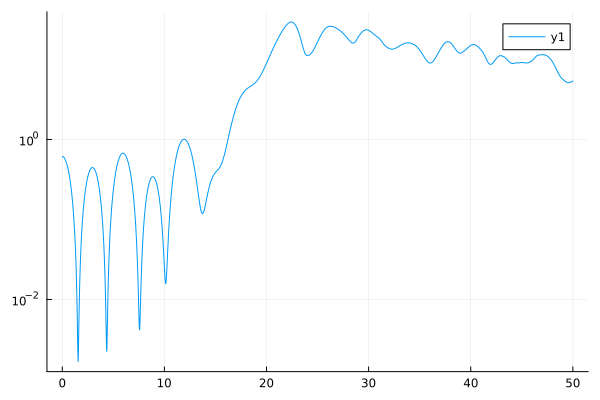

using Plots
using Random
using SparseArrays
using ParticleInCell
const dt = 0.005 # Time step
const nt = 10000 # Number of time steps
const L = 20π # Domain size
const nx = 320 # Number of grid cells
const np = nx * 20 # Number of particles
struct TSI
np::Int
qm::Float64
xp::Vector{Float64}
vp::Vector{Float64}
qp::Float64
function TSI( rng, np, mesh)
xmin = mesh.xmin
xmax = mesh.xmax
dx = mesh.dx
wp = +1.0 # plasma frequency
qm = -1.0 # charge/mass ratio
qp = wp^2 / (qm * np / (xmax - xmin))
xp = collect(LinRange(xmin, xmax, np + 1))[1:end-1] # Particle positions
v0 = 0.9 # Stream velocity
vt = 0.0000001 # Thermal speed
# Particle momentum, initially Maxwellian
vp = vt .* (1 .- vt .^ 2) .^ (-0.5) .* randn(rng, Float64, np)
pm = collect(0:np-1)
pm = 1 .- 2 * mod.(pm .+ 1, 2)
vp .+= pm .* (v0 * (1 - v0^2)^(-0.5)) # Momentum + stream velocity
# Add electron perturbation to excite the desired mode perturbation
xp1 = 1.0
mode = 1
xp .+= xp1 * dx * sin.(2π .* xp ./ (xmax - xmin) .* mode)
xp .= mod.(xp, xmax - xmin)
return new(np, qm, xp, vp, qp)
end
end
struct Poisson
dx::Float64
matrix::SparseMatrixCSC{Float64, Int64}
function Poisson(mesh)
nx = mesh.nx
matrix = spdiagm(
-1 => ones(Float64, nx - 2),
0 => -2 * ones(Float64, nx),
1 => ones(Float64, nx - 2),
)
new(mesh.dx, matrix)
end
end
struct ParticleMeshCoupling
np::Int
nx::Int
dx::Float64
g::Vector{Int}
f::Vector{Float64}
p::Vector{Int}
function ParticleMeshCoupling(np, mesh)
g = zeros(Int, np)
f = zeros(Float64, np)
p = [1:np; 1:np]
new(np, mesh.nx, mesh.dx, g, f, p)
end
end
function solve_poisson!(e, poisson, ρ)
dx = poisson.dx
ρ .*= (-dx^2)
ρ .= poisson.matrix \ ρ
e[1:end-1] .= ρ[1:end-1]
e[end] = 0.0
e .= (circshift(e, 1) .- circshift(e, -1)) ./ (2dx)
end
function compute_coeffs(pm, p)
dx = pm.dx
pm.f .= p.xp ./ dx .- 0.5
pm.g .= floor.(Int, pm.f)
g = vcat(pm.g, pm.g .+ 1)
pm.f .= 1 .- abs.(pm.f .- pm.g)
f = vcat(pm.f, 1 .- pm.f)
g .= mod1.(g, pm.nx)
mat = sparse(pm.p, g, f, pm.np, pm.nx)
dropzeros!(mat)
return mat
end
function compute_rho!(ρ, coeffs, mesh, p::TSI)
xmin = mesh.xmin
xmax = mesh.xmax
dx = mesh.dx
ρ_back = -p.qp * p.np / (xmax - xmin)
ρ .= p.qp ./ dx .* vec(sum(coeffs, dims = 1)) .+ ρ_back
end
function update_positions!(p, mesh, dt)
xmin = mesh.xmin
xmax = mesh.xmax
p.xp .+= p.vp .* dt
p.xp .= xmin .+ mod.(p.xp .- xmin, xmax - xmin)
end
function update_velocities!(p, e, coeffs, dt)
p.vp .+= coeffs * e .* p.qm .* dt
end
function main()
mesh = OneDGrid( 0, 20π, nx)
poisson = Poisson( mesh )
rng = MersenneTwister(42)
tsi = TwoStreamInstability( mesh)
pa = TSI( rng, np, mesh)
pm = ParticleMeshCoupling( np, mesh)
energy = Float64[]
e = zeros(Float64, nx)
ρ = zeros(Float64, nx)
xmin = mesh.xmin
xmax = mesh.xmax
for it in 1:nt+1
update_positions!(pa, mesh, dt)
mat = compute_coeffs(pm, pa)
compute_rho!(ρ, mat, mesh, pa)
solve_poisson!(e, poisson, ρ)
update_velocities!(pa, e, mat, dt)
push!(energy, 0.5 * sum(e.^2) * mesh.dx)
end
energy
end
main (generic function with 1 method)
results = main()
t = (0:nt) .* dt
plot( t, results, yaxis=:log)
